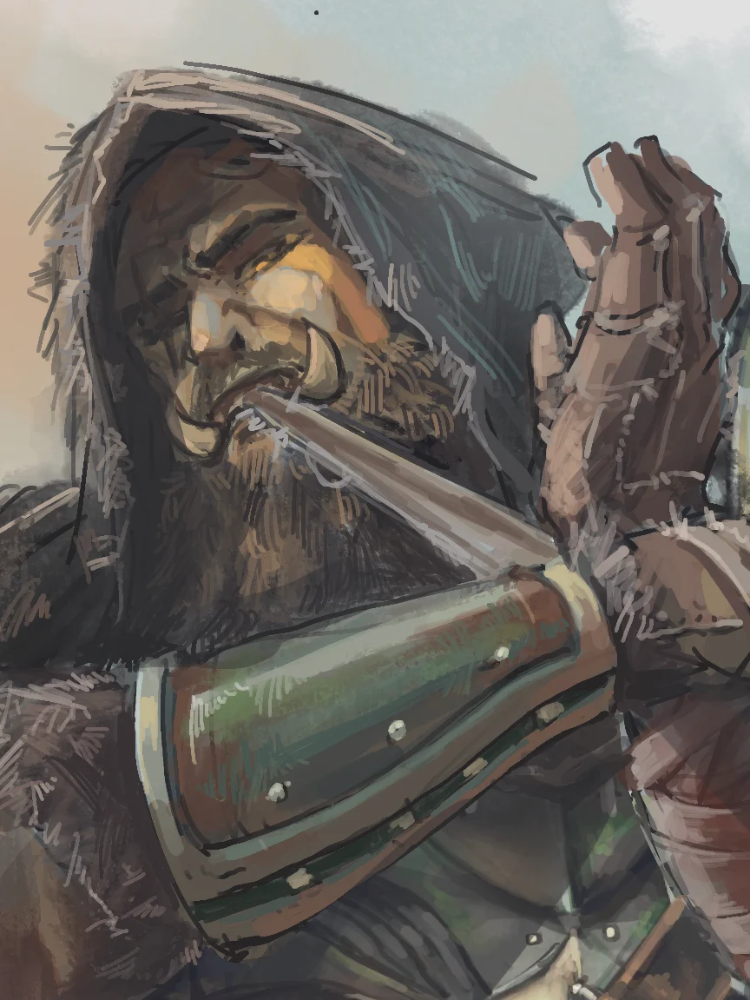
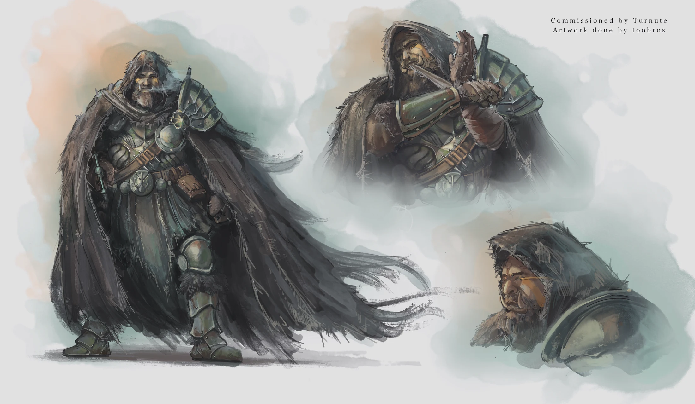

SKYRIM
Arbek gro-Khazgur
Relieur des routes

Un érudit Orsimer qui parcourt le vaste monde, échangeant ses talents de guerrier contre des connaissances qu'il rapporte à sa communauté.
Personnalité
Traits
- Qualités : Curieux, attentif, prudent.
- Défauts : Têtu, secret, distant.
Arbek est quelqu'un de solitaire qui a fait des routes de Tamriel son foyer. Il voyage de village en forteresse, de taverne en bibliothèque, recueillant ainsi aussi bien des savoirs pratiques et des récits historiques que les histoires personnelles de ceux qui acceptent de les lui confier. Il ne considère pas les écrits comme naturellement plus fiables que la parole : chaque témoignage doit être écouté et comparé.
Sa carrure et son équipement attirent immédiatement l'attention lorsqu'il entre quelque part. Arbek aime pourtant se fondre lentement dans le décor, trouvant une place contre un mur et écoutant les conversations se déroulant sans lui. Il parle peu, pose des questions précises, et laisse les autres remplir les silences.
Derrière la rugosité de ses mains, Arbek est quelqu'un de méticuleux. Il répare soigneusement son matériel, tourne les pages d'un ouvrage avec délicatesse, et refait consciencieusement son lit avant de partir d'une auberge. Chaque parole possède la même valeur à ses yeux, il consigne les récits de mages érudits avec la même application que pour un garde, un orphelin, un roi, ou une vieille femme rencontrée au bord de la route.
Arbek demeure extrêmement privé. Il parle volontiers des lieux qu'il a visité et des personnes qu'il y a rencontrées, mais presque jamais de lui-même. Même au sein de sa communauté, peu sont ceux qui prétendent réellement le connaître.
Tous s'accordent cependant sur un point : Arbek est remarquablement borné. Lorsqu'il estime avoir pris la bonne décision, arguments menaces et blessures ne font que ralentir sa progression. Il avance lentement, inexorablement, vers son objectif, longtemps après que quelqu'un de plus raisonnable n'aurait fait demi-tour.
Apparence
Arbek est de taille moyenne pour un Orsimer, mais sa large carrure et sa posture droite lui donnent une présence importante. Il se couvre d'une lourde armure de plates usée sous une cape de voyage sombre à capuche. L'ensemble dissimule la plupart des sacoches, carnets et étuis à parchemins qu'il transporte sur lui.
Deux marques jaunes tracées sous ses yeux symbolisent sa fonction de Gardien du Savoir au sein de sa communauté. Il porte une épaisse barbe ainsi que de longs cheveux noirs tirés en arrière et tressés. Son oeil droit est manquant. Une ancienne cicatrice traverse sa paupière, qu'il garde constamment fermée sur l'orbite vide.
Arbek se bat principalement à l'aide d'un lourd marteau de guerre à deux mains. Bien qu'il ne soit pas un mage académique, il maîtrise quelques sorts rudimentaires de guérison et de feu.

Biographie
TODO
Relations
Mor Khazgur
Arbek est respecté par sa communauté d'origine et ses retours sont généralement accueillis avec chaleur. Les outils, cartes, remèdes et connaissances qu'il rapporte ont depuis longtemps démontré la valeur de sa mission.
Cette reconnaissance n'empêche pas une certaine méfiance. Quelques membres de la forteresse estiment qu’il s’est trop rapproché des institutions étrangères qui ont longtemps pris de haut les Orsimers.
Sa foi discrète est également source de tensions. Arbek respecte le Code de Malacath, mais refuse de considérer toute souffrance comme une épreuve nécessaire ou toute tradition comme vérité impossible à interroger.
Il séjourne ainsi rarement à Mor Khazgur, tout au plus quelques semaines par an, préférant la solitude contemplative des routes de Tamriel. Son sang, les services qu'il rend et les liens qu'il entretient avec les siens garantissent néanmoins que les portes de la forteresse lui resteront ouvertes, même quand il tarde à les franchir.
Anecdotes
- Arbek classe ses notes selon la fiabilité de leur sources. Son système de rangement est impossible à suivre, et son écriture est minuscule par nécessité d'économiser chaque parcelle de parchemin disponible. Ainsi, il n'est pas inquiet que quiconque d'autre que lui puisse jamais voler le fruit de ses recherches.
- Il paie toujours les histoires personnelles qu'on lui confie, que ce soir avec de l'or, un repas, une tournée d'hydromel, ou un service. Il n'est pas rare de le voir réparer la barrière d'un fermier tandis que celui-ci lui raconte comment son grand-oncle a vaincu un Ours à mains nues.
- Arbek tolère facilement les insultes et mauvais regards dirigés contre lui. Il lui arrive de laisser les étrangers supposer qu'il ne sait pas lire, les langues des ignares se déliant souvent lorsqu'ils ne pensent pas pouvoir être compris ou contredits.
Note de l’auteur
Sans doute mon plus ancien OC en date, Arbek provient d'une sauvegarde de Skyrim sur Switch datant de 2018.
Je me rappelle avoir été inspiré à l'époque du playthrough de Bob Lennon sur La Terre du Milieu : L'Ombre du Mordor où il avait une certaine rivalité avec un orc nommé Ar Beka. Je ne saurais trop dire à ce jour pourquoi, mais cela m'avait alors poussé à redécouvrir Skyrim dans le rôle de ce personnage, un érudit Orsimer voyageant Tamriel pour collecter du savoir (et donc tous les bouquins sur lesquels je mettais la main).
J'ai un peu oublié cette partie pendant 8 ans. Cependant, Arbek a plus que mérité sa place parmi mon hall d'OC : il s'agissait peut-être de la première fois que je jouais un jeu en habitant un personnage créé, une expérience que j'aime toujours autant reproduire aujourd'hui.
Je me rappelle des longues heures passées à dévaliser chaque bibliothèque en Bordeciel, puis à lire chaque bribe de lore sans vraiment y comprendre grand chose. Je me rappelle de la solitude contemplative d'un voyageur perdu dans les immenses plaines de Skyrim, parfois brisée par un occasionnel bandit ou Dragon. Je me rappelle des quêtes et suites de dialogue où, pour la première fois, je réfléchissais constamment non pas à ce que je voulais dire, mais ce que Arbek répondrais en cette situation.